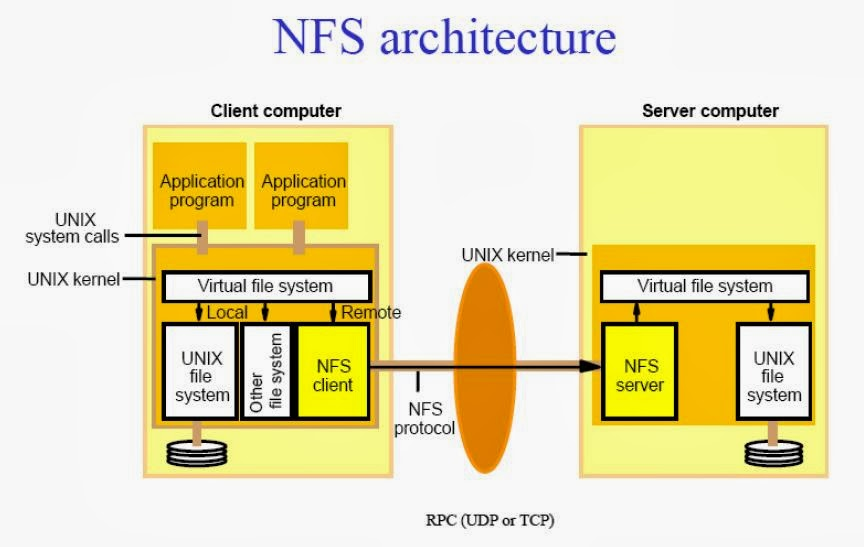
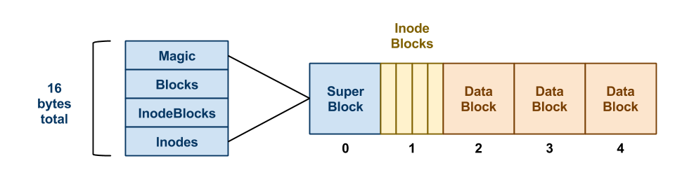
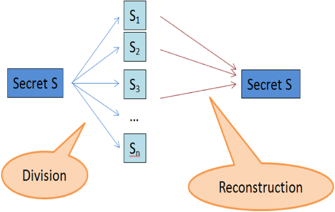
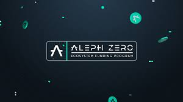
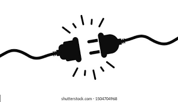

A filesystem rooted in blockchain for immutable traceability
It's important the audit of activity is immutable
We are interested in the who,what,when and their position within a team
We start by creating a bespoke NFS in Rust
that adheres to the NFS interface spec

Here's a simple view of the FS metadata and data we must trap and store
in order that we have all the data to magic up a filesystem

The NFS interface provides the hooks for us to grab the FS data and metadata
A secret sharing approach is a intrinsic part of our protocol
Additionally it provides a significant layer of data security & DDOS defence

The compute that underpines the algorithm runs off-chain presently
It feeds an OCW with audit points from inside the algorithm

Smart contracts are used by the NFS to authenticate and permission access to data
The result is a lightweight data substrate for dApps and apps alike
One that provides intrinsic provenance tracking at the file level
In fact it's a pluggable blockchain native filesystem
- plugs into laptops, phones, iot devices, kubernetes pods
- plugs into dApps and apps

We are currently working on
- ZNPs that attest to that the verified compiled instance of the algorithm used
- making a web3 wallet the basis for authentication
- launching a direct to market pluggable web3 based service
Benefits include:
- proof of origin, proof you are the creator, design counter intelligence
- provenance of outputs and interactions within collaborative teams
- we have deployed a silicon chip design provenance PoC
- we are working towards fulfilling a Pharma compliance issue